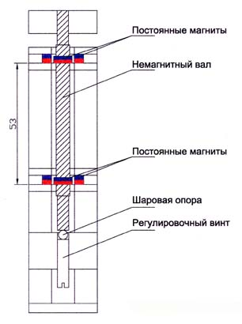

Пассивные магнитные подшипники (подвесы) на постоянных магнитах
Теорема (запрет) Ирншоу
В системе тел, взаимодействующих посредством полей, потенциал которых изменяется обратно пропорционально расстоянию от источника, и не способных к изотропному вытеснению полей взаимодействия из занимаемого пространства, устойчивое равновесие невозможно.
К полям, потенциал которых убывает пропорционально расстоянию от источника, относятся, в частности, гравитационное, магнитостатическое и электростатическое поле. Чтобы получить устойчивое равновесие в таких полях, необходимо сконструировать систему с минимумом потенциальной энергии в точке равновесия, т. е. создать в некоторой области пространства вокруг этой точки "потенциальную яму". Для этого можно использовать неоднородные среды, а также материалы, относительная диэлектрическая или относительная магнитная проницаемость которых меньше, чем у окружающей их среды. Если окружающей средой является воздух (вакуум), то устойчивое равновесие можно получить только в магнитостатическом поле, используя диамагнетики или сверхпроводники. Однако, поскольку относительная магнитная проницаемость известных диамагнетиков мало отличается от единицы, то и сила, возвращающая тело к положению равновесия, будет невелика. А использование сверхпроводящих материалов ограничено необходимостью их существенного охлаждения. Поэтому в практических конструкциях магнитных подшипников на постоянных магнитах имеется, как правило, хотя бы одна степень свободы, в направлении которой равновесие невозможно.
Схемы пассивных магнитных подшипников
Радиальные магнитные подшипники на постоянных магнитах
1. 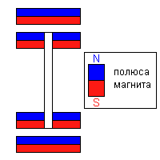 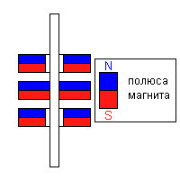 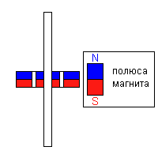
Рис. 1. Радиальные магнитные подшипники из цилиндрических и кольцевых магнитов, намагниченных аксиально.
1. 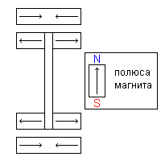 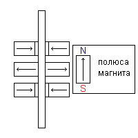 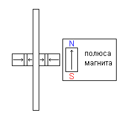
Рис. 2. Радиальные магнитные подшипники из цилиндрических и кольцевых магнитов, намагниченных радиально.
Все радиальные магнитные подшипники имеют поперечную (радиальную) жесткость и неустойчивы в осевом направлении.
Аксиальные магнитные подшипники на постоянных магнитах
1. 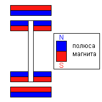 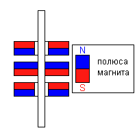 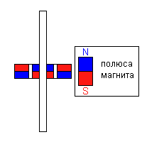
Рис. 3. Аксиальные магнитные подшипники из цилиндрических и кольцевых магнитов, намагниченных аксиально.
1. 2. 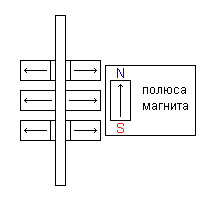
Рис. 4. Аксиальные магнитные подшипники из цилиндрических и кольцевых магнитов, намагниченных радиально.
Все аксиальные магнитные подшипники имеют продольную (осевую) жесткость и неустойчивы в радиальном направлении.
Примеры конструкций
На рис. 5 показан макет устройства, состоящего из вала с двумя пассивными радиальными магнитными подшипниками.

Рис. 5. Макет устройства с двумя пассивными радиальными магнитными подшипниками.
Каждый из подшипников состоит из двух постоянных магнитов - наружного кольцевого и внутреннего цилиндрического, намагниченных аксиально (схема 3 рис. 1). Для того, чтобы обеспечить устойчивость вала в осевом направлении, использована шаровая опора. С помощью регулировочного винта можно выставлять положение магнитов друг относительно друга таким образом, чтобы максимально уменьшить нагрузку на опору и снизить момент трения.
Намагничивание постоянных магнитов осуществлялось в установках намагничивания [5].
Ссылки:
27.12.2006
12.05.2008
Альтернативные источники
энергии
Компьютеры и
Интернет
Магнитные поля
Механотронные системы
Перспективные
разработки
Электроника и
технология